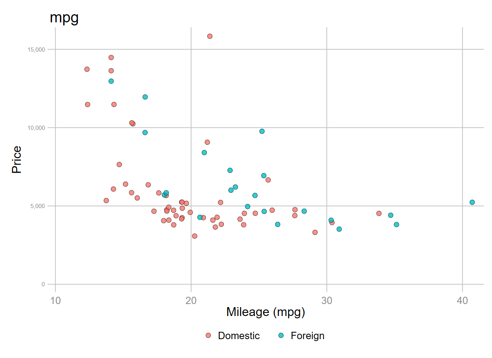
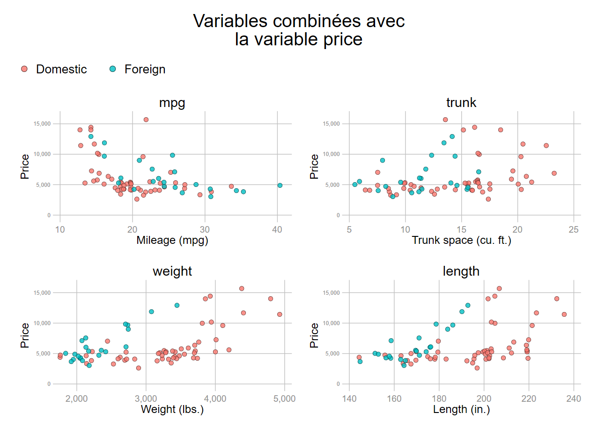

local expression A B C
foreach e of local expression {
mac list _ms
}
/*
_ms : A
_ms : B
_ms : C
*/
mac list _ms
* _ms: CAutomatiser la programmation
Danger
Les informations qui vont suivre demande un minimum de pratique avec la manipulation des macros Stata.
Macros empilées
Le principe est plutôt simple, il s’agit lors d’une expression en boucle de conserver et empiler les expressions générées à chaque itération, et les enregistrer dans une macro.
Syntaxe type
Exemple : On veut obtenir la chaîne de caractère «A B C » à partir des trois éléments distincts « A », « B » et « C ».
Avec une macro standard:
Dans chaque itération, chaque expression a bien été enregistrée, mais elle est écrasée à l’itération suivante. On pourrait à chaque itération enregistrer chaque macro et les empiler à l’extérieur de la boucle, mais il est possible de le faire automatiquement avec une macro dite « empilée ».
La syntaxe est simple, on appelle la macro dans l’expression qui la génère, ce qui permet de la garder en mémoire à chaque boucle.
Syntaxe:
local nom_macro `nom_macro' expression
global nom_macro $nom_macro expression Avec une macro empilée:
local expression A B C
foreach e of local expression {
local me `me' `ms'
mac list _me
}
/*A chaque itération
_me: A
_me: A B
_me: A B C
*/
*Expression finale enregistrée
mac list _me
* _me: A B CAutomatiser la création du graphique
Pour un graphique, une application évidente est d’alléger et automatiser une syntaxe qui empile plusieurs objets graphiques de même nature. Si on reprend un type de nuage de points déjà exécuté de nombreuses fois dans ce document:
tw scatter price mpg if rep78==1
|| scatter price mpg if rep78==2
|| scatter price mpg if rep78==3
|| scatter price mpg if rep78==4
|| scatter price mpg if rep78==5Avec une macro empilée:
* On génère la syntaxe
levelsof rep78, local(l)
foreach v of local l {
local scat `scat' scatter price mpg if rep78==`v' ||
}
* Exécution du graphique
tw `scat' , legend(off)Ce qui est généré par la macro à chaque itération :
Itération 1:
scatter price mpg if rep78==1 ||Itération 2:
scatter price mpg if rep78==1 || scatter price mpg if rep78==2 ||Itération 3:
scatter price mpg if rep78==1 || scatter price mpg if rep78==2 ||
scatter price mpg if rep78==3 ||Itération 4
scatter price mpg if rep78==1 || scatter price mpg if rep78==2 ||
scatter price mpg if rep78==3 || scatter price mpg if rep78==4 ||Itération 5
scatter price mpg if rep78==1 || scatter price mpg if rep78==2 ||
scatter price mpg if rep78==3 || scatter price mpg if rep78==4 ||
scatter price mpg if rep78==5 ||C’est la dernière qui est finalement enregistrée et il ne manque plus qu’à l’appeler après tw. Au-delà de l’allègement de la syntaxe du grap recode rep78 (1=2) hique cette manière de procéder automatise des modifications faites en amont, par exemple ici un regroupement de modalités de la variable rep78.
*Il n’est pas nécessaire de modifier le graphique
levelsof rep78, local(l)
foreach v of local l {
local scat `scat' scatter price mpg if rep78==`v' ||
}
tw `scat' , legend(off)Générer une légende
Sur le même principe, on peut générer automatiquement une légende. L’opération peut néanmoins s’avérer un peu plus délicate, en raison du contrôle des doubles quotes pour les labels.
Dans un premier temps on ne va pas utiliser les fonctions macro qui permettent de récupérer automatiquement les noms et le contenu des labels.
Sans les fonctions macro:
local l1 `""Domestic""'
local l2 `""Foreign""'
forvalue i=1/2 {
local ord `ord' `i' `l`i''
}
macro list _ord
* _ord: 1 "Domestic" 2 "Foreign"
#delimit ;
tw scatter price mpg if !foreign
|| scatter price mpg if foreign
||, legend(order(`ord'))
;Rappel: pour la légende on doit explicitement récupérer les doubles quotes pour les expressions qui seront affichées dans la légende: local nom_macro `““expression”“’
Avec les fonctions macro:
Les fonctions utilisées sont value label pour récupérer le nom du label et lab pour récupérer l’expression affectée à la modalité. Comme les expressions de la légende vont être récupérées via des macros on va accroître le nombre de quotes, ce qui peut s’avérer fastidieux pour lire le programme et éventuellement le modifier. Dans le programme qui suit on va générer automatiquement la syntaxe principale du graphique avec une macro empilée, comme expliqué précédemment. Les noms des variables seront également transformés en token. Pour anticiper un changement de variable de stratification, ici foreign, on va utiliser un compteur pour automatiser le nombre d’éléments contenu dans la légende.
local varlist price weight foreign
tokenize `varlist'
* Légende
local labn: value label `3' // on récupère le nom du label
levelsof `3', local(l)
local i=1
foreach l2 of local l {
local lab`l2': label `labn' `l2' // on récupère l’expressions pour chaque valeur
local lab`l2' `""`lab`l2''""' // on transforme l’expressions en macro
local ord `ord' `i++' `lab`l2'' // on génère la syntaxe de la légende
}
* Graphique
local ops mlc(black) mlw(vthin)
foreach i of local l {
local scat `scat' scatter `1' `2' if `3'==`i', `ops' ||
}
tw `scat', legend(order(`ord'))Routine (.ado)
Manuel d’aide Stata [entrée syntax] https://www.stata.com/manuals/p.pdf#ppProgramming
Principe des programmes qui exécutent des commandes (.ado)
La routine/commande peut être programmée dans un programme principal (.do) ou sauvegardé comme .ado dans le répertoire où sont enregistrées les commandes externes (répertoire ado). Il est conseillé de sauvegarder ses propres commandes dans un sous répertoire personal, et de créer des sous répertoire par lettre de l’alphabet. Le nom du fichier .ado doit être identique au nom de la commande programmée.
Nous allons décrire seulement quelques principes qui utilisent les éléments vus dans ce chapitre. Il est difficilement envisageable de s’engager dans la programmation d’une commande sans utiliser le manuel d’aide officiel.
Syntaxe générique
capture program drop nom_commande // jusqu’à la validation du programme
program define nom_routine [options]
syntax [arguments]
* ....programme de la routine...
endLa première ligne est nécessaire tant que la commande est exécutée dans l’éditeur de programme. Elle peut être supprimée lorsque le programme est enregistré dans un sous répertoire du répertoire personal.
Exemple: une simple division
Programmation de la routine:
capture program drop division
program define division
syntax anything
tokenize `anything'
di ""
di as result "Le résultat de la division est: " `1' / `2'
end Exécution et résultat:
division 1245 722
* Le résultat de la division est: 1.7243767Application pour un graphique
On va automatiser l’exécution du nuage de points avec une stratification, ici la variable foreign.
Programme
capture program drop sgraph
program define sgraph
syntax varlist(min=3 max=3), [gops(string)]
tokenize `varlist'
* Légende
qui levelsof `3', local(l)
local i=1
local labn: value label `3'
foreach l2 of local l {
local lab`l2': label `labn' `l2'
local lab`l2' `""`lab`l2''""'
local ord `ord' `i++' `lab`l2''
}
* Syntaxe graphique
foreach l2 of local l{
local ops "mlc(black) mlw(*.3) jitter(3) mc(%80) msiz(*1) mlc(`mlc')"
local scat `scat' scatter `1' `2' if `3'==`l2', `ops' ||
}
* Exécution du graphique
tw `scat', legend(order(`ord') rows(1) pos(6) region(color(%0))) `title' `gops'
endExécution de la commande sgraph
sgraph price mpg foreign, gops(ylabel(,labs(*.6)) title("mpg") name(mpg, replace))
Programme pas à pas
capture program drop sgraph
program define sgraph
syntax varlist(min=3 max=3), [gops(string)]
tokenize `varlist'- La commande s’appelle
sgraph. - Pour être exécutée, elle demande 3 arguments de type variable. On fixe un nombre obligatoire de variable égale à 3 : axe Y, axe X et la variable de stratification.
- La commande a un argument optionnel . Comme pour les fichiers d’aide, le caractère optionnel est indiqué par [nom_option].
- Le nom de l’option est précisé: elle permet de passer des options générales d’un graphique (
gops()). On indique son format attendu, ici une chaîne de caractères.
* Légende
qui levelsof `3', local(l)
local i=1
local labn: value label `3'
foreach l2 of local l {
local lab`l2': label `labn' `l2'
local lab`l2' `""`lab`l2''""'
local ord `ord' `i++' `lab`l2''
}
* Syntaxe graphique
foreach l2 of local l{
local ops "mlc(black) mlw(*.3) jitter(3) mc(%80) msiz(*1) mlc(`mlc')"
local scat `scat' scatter `1' `2' if `3'==`l2', `ops' ||
}La légende et la syntaxe du graphique combiné sont générés avec une macro empilée
* Exécution du graphique
tw `scat', legend(order(`ord') pos(6) region(color(%0))) `title' `gops'
endLe graphique est exécuté, l’option qui a été définie est entrées sous forme de macro.
Le programme du graphique indique déjà des éléments optionnels liés à la légende, comme la position et l’absence de contour. Il est possible d’écraser ces arguments « par défaut » dans l’option gopts.
Exemple : générer rapidement un graphique qui combine le prix à plusieurs variables avec la commande sgraph
foreach X of varlist mpg trunk weight length {
#delimit ;
sgraph price `X' foreign,
gops( title("`X'")
ylabel(, labs(*.6))
name(`X', replace)) nodraw
;
#delimit cr
local g `g' `X' //macro empilée pour lister les graphiques combinés
}
grc1leg `g', legendfrom(mpg) pos(11) title("Variables combinées avec" "la variable price")